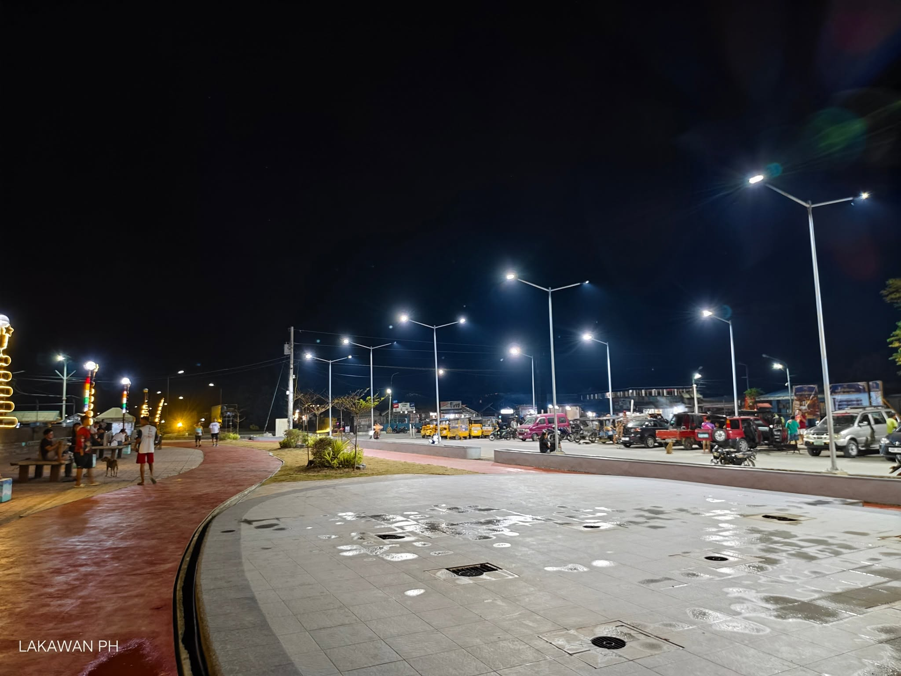

Hilongos Baywalk

The Hilongos Baywalk is a relaxing coastal destination where visitors can enjoy fresh sea air, beautiful views, and peaceful walks along the shoreline.
It is a welcoming place for families, friends, and visitors to spend time together while appreciating the natural beauty and community life of Hilongos, Leyte.
Contact
Get in touch with Lloyd Alcoser:
johnlloydalcoser@gmail.com09557416741
Lloyd Alcoser/FB